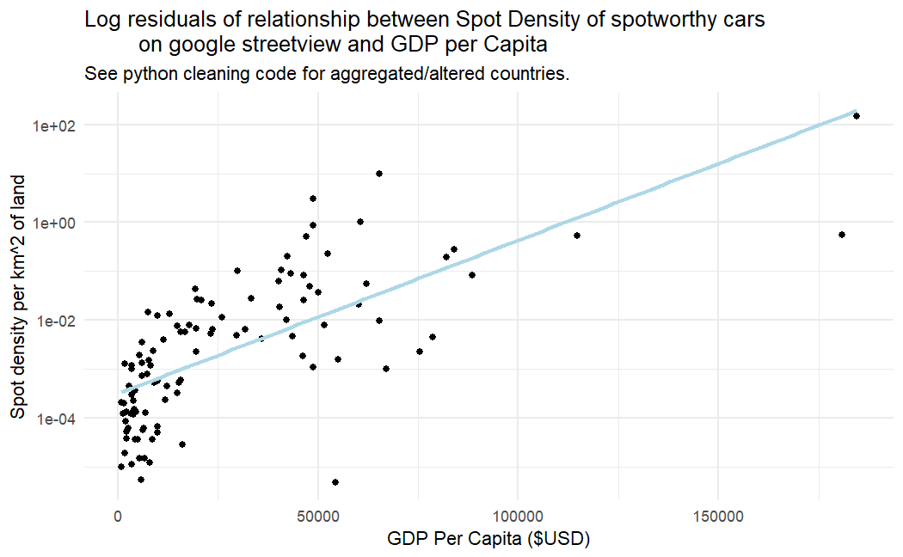

Author: William Day | A demonstration of a range of acquired GIS and data science knowledge
import pandas #All code human written!
import numpy
import re
import requests
import geopandas
sheet_ids = ['Asia.htm', 'USA.htm', 'UK & Ireland.htm', 'Rest of Europe.htm', 'Africa, Mid&South America, Oceania, Canada.htm'] #current sheet IDs; To download, open /htmlview (change /edit), then save webpage.
regex = re.compile(r'[@(ll=)(viewpoint=)](-?\d+\.\d+),(-?\d+\.\d+)') #matches all link types, regular @, old ll, api call (viewpoint).
def mobile_link_solver(url):
'''Takes a google maps mobile share-link and returns the initial url.'''
try:
response = requests.head(url, allow_redirects=False, timeout=5)
if response.status_code > 299 and response.status_code < 400: #3xx are redirect urls
return response.headers.get('Location')
elif response.status_code == 200: #Somehow if the page doesn't have to redirect; fringe case.
return response.url
else:
return numpy.nan #Links that never existed.
except Exception:
return numpy.nan
def coord_parser(url):
'''Takes a google maps url and returns the latitude and longitude.'''
if not isinstance(url, str) or pandas.isna(url): #missing link, or it's a integer. Both invalid.
return numpy.nan, numpy.nan
else:
match = regex.search(url)
if match: #regular desktop link format.
return float(match.group(1)), float(match.group(2))
elif 'goo.gl' in url: #mobile format.
return coord_parser(mobile_link_solver(url))
else:
print(f'Unparsable/typo row: {url}')
return numpy.nan, numpy.nan
def update_files(url_ids=sheet_ids): #run this section initially!
'''Takes a list of Sheet IDs and cleans the data into a .csv for ArcGIS and Geopandas.'''
files = []
for url in url_ids:
df = pandas.read_html(url, header=0)
files.append(df[0])
spots = pandas.concat(files, ignore_index=True)
spots.rename({"Address.1": "Latitude"}, inplace=True)
spots['Longitude'] = numpy.nan
coords = spots['Address'].apply(coord_parser) #Breaks down links into coordinates.
spots['Latitude'] = [r[0] for r in coords]
spots['Longitude'] = [r[1] for r in coords]
return spots.to_csv('Spots list.csv') #exports as CSV.Use the map below to explore spot density globally. Click individual nations to find out specific density values
import pandas #All code is human written!
import geopandas
import matplotlib.pyplot as plt
def explore_data(filename):
'''Processes data into a GeoDataFrame.'''
coord_file = pandas.read_csv(filename, low_memory=False) #Due to the nature of the conflicts, Finland gets inflated, UK gets aggregated.
coord_file.replace(to_replace={'Aland': 'Finland', 'England': 'United Kingdom', 'Northern-Ireland': 'United Kingdom',
'Scotland': 'United Kingdom', 'Wales': 'United Kingdom', 'USa': 'USA', 'italy': 'Italy'}, inplace=True)
gdf = geopandas.GeoDataFrame(coord_file,
geometry=geopandas.points_from_xy(coord_file['Longitude'], coord_file['Latitude']),
crs="EPSG:4326" #since google maps is WGS84
)
world_map = geopandas.read_file("ne_10m_admin_0_countries")
savestate = world_map
areas = pandas.read_csv("true-size-of-countries-2024.csv")
areas = areas.rename(columns={'country': 'NAME'})
areas['NAME'].replace(to_replace={'United States': 'United States of America', 'Ivory Coast': "Côte d'Ivoire",
'Czech Republic': 'Czechia', 'Eswatini': 'eSwatini', 'Republic of the Congo': 'Congo',
'DR Congo': 'Dem. Rep. Congo', 'Central African Republic': 'Central African Rep.',
'Bosnia and Herzegovina': 'Bosnia and Herz.', 'Macau': 'Macao', 'Western Sahara': 'W. Sahara',
'Curacao': 'Curaçao', 'South Sudan': 'S. Sudan', 'Saint Pierre and Miquelon': 'St. Pierre and Miquelon',
'Dominican Republic': 'Dominican Rep.', 'Faroe Islands': 'Faeroe Islands'},
inplace=True) #All naming discrepancies.
world_map = world_map.merge(areas, on='NAME')
world_map['NAME'].replace(to_replace={'Bosnia and Herz.': 'Bosnia and Herzegovina', 'Curaçao': 'Curacao', 'Dominican Rep.': 'Dominican Republic',
'Czechia': 'Czech Republic', 'eSwatini': 'Eswatini', 'North Macedonia': 'North-Macedonia',
'St. Pierre and Miquelon': 'Saint Pierre and Miquelon', 'South Africa': 'South-Africa',
'South Korea': 'South-Korea', 'Netherlands': 'The Netherlands', 'United States of America': 'USA',
'Faeroe Is.': 'Faroe Islands', 'Åland': 'Aland', 'Macao': 'Macau', 'United Arab Emirates': 'UAE'},
inplace = True)
aggregator = gdf['Country'].value_counts()
world_map['Spot_count'] = world_map['NAME'].map(aggregator)
world_map['Spot_count'] = world_map['Spot_count'].fillna(0).astype(int)
world_map['Spot_density'] = world_map['Spot_count'] / world_map['landAreaKm']
world_map['GDP_per_capita'] = (world_map['GDP_MD'] / world_map['POP_EST']) * (10**6) #Line for R. Calculates approximate GDP per capita
world_map['Spot_density'] = world_map['Spot_density'].round(3)
bins=[0, 0.001, 0.01, 0.1, 1]
interactive_map = world_map.explore(column='Spot_density', cmap='Blues', scheme='UserDefined', legend=True, #Graphs Spots per square km.
classification_kwds={'bins': bins}, tiles='cartodbpositron', tooltip=['NAME', 'Spot_density'],
legend_kwds={'loc':'lower left', 'title': 'Spots per square km', 'colorbar': False, 'scale': False, 'fmt':'{:.3f}'}
)
#world_map.to_csv('World_map.csv')
return interactive_map.save('spot_density_map.html') #swap this with to_csv to export for R
To verify the relationship between infrastructure density and national economic development, we eliminate countries without coverage parameters and construct a log-log linear model.
library(dplyr) #All code is human written!
library(ggplot2)
library(readr)
world_map <- read_csv('World_map.csv')
world_map <- world_map %>%
filter(Spot_density > 0) #since countries = 0 have no spots.
ggplot(data=world_map, aes(x=GDP_per_capita, y=Spot_density)) +
geom_point()+
theme_minimal()+
stat_smooth(method="lm", se=FALSE, color="lightblue") + #Linear regression tested
scale_y_continuous(trans="log10")+ #applied transformation to make the data look good. Still shows relationship
labs(title='Log residuals of relationship between Spot Density of spotworthy cars
on google streetview and GDP per Capita', subtitle='See description for aggregated/altered countries.',
x='GDP Per Capita ($USD)', y='Spot density per km^2 of land')
model <- lm(data=world_map, log10(Spot_density) ~ log10(GDP_per_capita))
summary_model <- summary(model)
print(summary_model)
My analysis shows some interesting results of the relation between the independent variable of GDP per Capita and the dependent variable of the density of spotworthy cars on google streetview per km^2 of land. With an R-squared of 0.5524 and a significant p-value of <2.2e^-16 has strong evidence to suggest there is a positive linear log-log relationship between both variables. Possible confounding variables include: Google streetview coverage. Google streetview is not available in many countries, with varying coverage frequencies and coverage resolution in countries. The more frequencies and the more recent the data, the more spotworthy cars. If there was a way to measure panoramic density, the number of google streetview panoramas in a country, we could likely get a far closer estimate of the relationship between GDP per Capita and the density of spotworthy cars on google streetview. Local government vehicle laws: Some countries have very strict vehicle import laws whereas some have very relaxed laws. For example, buying a car in a country like Denmark has a significant premium to encourage alternate modes of transport. Other countries might have really good public transport infrastructure while not emphasizing anti-car policies, whereas on the opposite end of the spectrum countries might heavily underinvest in alternate transport methods (such as the United Arab Emirates.) Concentration of spotting: The original spots list is a community-composed list of spots by the community that choose where to spot and do not randomly sample all streetview panoramas. This means areas with higher densities (Fig 2.) are more likely to be spotted at, leading towards inherent time allocation and spot bias. More rare and exotic cars are more desirable to add to the spots list as well, thus leading to a bias where these rare and more spotworthy cars are documented, and tend to be more concentrated in the same dense areas. This means countries that scored with quite high negative residuals on the spots list are likely to be undervalued and have far more spots in them than anticipated. The coefficient of GDP per Capita, the dependent variable is 1.99, with a standard error of 0.1756 for the coefficient. This means for every 1% increase in GDP per Capita, there is on average a 1.99% increase in spot density.